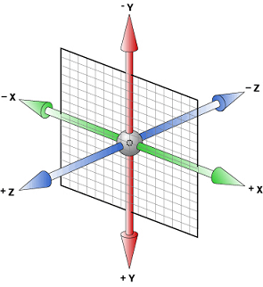
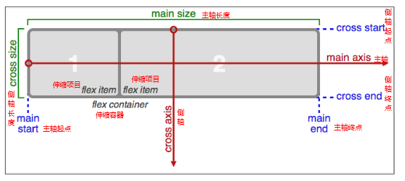

CSS3
如同人类的的进化一样，CSS3是CSS2的“进化”版本，在CSS2基础上，增强 或 新增 了许多特性， 弥补了CSS2的众多不足之处，使得Web开发变得更为高效和便捷。
现状
- PC 端浏览器支持程度差，需要添加私有前缀
- 移动端支持优于 PC 端
- 不断改进中
- 应用相对广泛
关于私有前缀：
在标准还未确定时，部分浏览器已经根据最初草案实现了部分功能，为了与之后确定下来的标准进行兼容，所以每种浏览器使用了自己的私有前缀与标准进行区分，当标准确立后，各大浏览器将逐步支持不带前缀的 css3 新属性
目前已有很多私有前缀可以不写了，但为了兼容老版本的浏览器，可以仍沿用私有前缀和标准方法，逐渐过渡
一般来说，CSS3主要是为移动端而生的，因此我们在移动端没必要写太多的前缀，因为移动端的 ios 和 Android 的浏览器都是 webkit 内核
谷歌、苹果浏览器：
-webkit-
火狐浏览器：-moz-
IE浏览器：-ms-
欧朋浏览器：-o-一般工作中不用去加，会通过打包工具 webpack 自动添加
选择器
阴影
- text-shadow: 文字阴影
1 | 语法：text-shadow：none | <shadow> [ , <shadow> ]* |
- box-shadow: 边框阴影
1 | 语法：box-shadow：none | <shadow> [ , <shadow> ]* |
背景
background-size
bakground-clip
background-origin
渐变
线性渐变
linear-gradient() 指沿着某条直线朝一个方向产生的渐变效果
渐变实际上相当与一张图片，因为需要加给 background-image 才会生效
1 | /* 最简单的渐变 颜色至少两个 方向默认从上到下 */ |
径向渐变
radial-gradient 指从一个中心点开始沿着四周产生渐变效果
1 | /* 最简单的渐变 */ |
盒子模型
CSS3 中可以通过 box-sizing 来指定盒模型，即可指定为 content-box、border-box，这样我们计算盒子大小的方式就发生了改变
可以分成两种情况：
- box-sizing: border-box 计算方式为 content = width – border - padding
- box-sizing: content-box 计算方式为 content = width
calc() 函数
用于动态计算长度值
- 注意：运算符前后都需要保留一个空格，例如：
width: calc(100% - 10px) - 任何长度值都可以使用 calc() 函数进行计算
- calc() 函数支持
+、-、*、/运算 - calc() 函数使用标准的数学运算优先级规则
过渡
- 过渡的属性
如果两个状态发生改变，没有过渡，效果是瞬间变化的，如果加上了过渡，那么这个过程就会有动画的效果，整个状态变化的过程是由浏览器来完成的，我们只需要关注开始状态与结束状态即可
1 | /* transition-property：设置过渡属性 默认值为 all 表示全部*/ |
注意：
- 过渡必须要有两个状态的变化
- 过渡除了可以加到初始的状态，可以加到 hover 状态，但效果不一样，如果加到 hover 状态，回来就没有过渡了
- 属性合写
1 | /* 属性 时间 延时 速度 */ |
2D 转换
transform: 转换，是 CSS3 最具颠覆性的几个特性之一，既可以用于 2D 转换，也可以用于 3D 转换
transform: 2D 转换，元素在平面上实现移动、旋转、缩放、斜切等操作
scale 缩放
1 | transform: scaleX(0.5); /* 让宽度变化 */ |
注意：
scale 接收的值是倍数，因此没有单位
scale 是一个值时，宽度高度会等比例同事缩放
scale 缩放时内部内容也会缩放
可以通过 transition-origin 设定缩放原点 （可以是数值或方位词top、left…)
translate 平移
1 | transform: translateX(100px); |
注意：
- translate 的值可以是 px，也可以是百分比，如果是百分比，那么参照的是自身的宽高
- translate 移动的元素并不会影响其他盒子，类似于相对定位
rotate 旋转
1 | transform: rotate(360deg); /* 旋转360度 */ |
注意：
- 单位是 deg，角度，不是 px
- 正值顺时针转，负值逆时针转
- 可以通过 transition-origin 设定旋转原点
rotate 旋转会让坐标轴也跟着旋转
skew 斜切(变形)
skew 在实际开发中，是用的最少的一个属性。一般来说，x 和 y 只会倾斜其中的一个
1 | /* 在水平方向倾斜30deg */ |
【案例：扫光效果.html】
transform-origin 转换原点
通过 transform-origin 可以设置转换的中心原点
1 | transform-origin: center center; |
转换合写问题
transform 属性只能写一个，如果写了多个会覆盖，属性的值可以写多个， 用空格隔开即可
1 | transform: translateX(800px) scale(1.5) rotate(360deg); |
- transform 属性可以连写，但是顺序对效果影响的，因为它会在第一个效果的基础上执行第二个效果，然后执行第三个效果（通常会把 rotate 放后面）
- 如果对 transform 进行过度效果的时候，初始状态和结束状态要一一对应
【案例：盾牌打散与合并效果.html】
3D 转换
思考：2D与3D的区别？
坐标轴
用 X、Y、Z 分别表示空间的3个维度，三条轴互相垂直。注意+Y是向下的

perspective 透视
电脑显示屏是一个 2D 的平面，因为我们看不出来旋转的方向，通过 perspective 属性，可以定义 3D 元素距视图的距离，单位是 px。
说白了，设置了perspective属性后，就有了进大远小的效果了，在视觉上，让我们能看出来 3d 的效果。
注意：当为元素定义 perspective 属性时，其子元素会获得透视效果，而不是元素本身。
1 | perspective：500px; |
对于我们眼睛来说，离我们越近的房子，我们会感觉到这个房子越大，离我们越远的房子，就会感觉越小，其实房子的大小都是一样的，只是在视觉上的一种不同。

rotate 旋转
1 | transform: rotate(45deg); /* 让元素在平面2D中旋转，相当于沿着Z轴旋转 */ |
【3D旋转.html】
translate 平移
1 | /* 沿着X轴的正方向移动45px */ |
【3D平移.html】
【立方体.html】
transform-style
transform-style 属性规定如何在 3D 空间中呈现被嵌套的元素。注意这个属性只能给父元素添加
1 | flat: 默认值，2d显示 |
transform-style 与 perspective 区别
- 透视：透视只是相当于设置了一个距离，辅助我们查看 3D 效果的工具
- preserve-3d：给父盒子添加，让子元素保留 3D 的位置，说白了，只有设置了 preserve-3d，这个元素才能被称之为 3d 元素
- 一个 3d 元素可以没有perspective，但是不能没有 transform-style
【3D导航案例.html】
【切割轮播图案例】
【3D相册案例】
过渡结束事件
1 | // 给最后一个ul添加过渡结束事件（节流阀） |
动画
动画可以通过设置多个节点来精确控制一个或者一组动画，常用来实现复杂的动画效果
动画与过渡的区别：
1 | 过渡必须触发，需要两个状态的改变。 |
使用一个动画的基本步骤：
1 | 1.通过 @keyframes 指定动画序列 |
animation
animation 是一个复合属性，一共有8个参数
1 | animation-name: 动画名称，由@keyframes定义的 |
动画库的使用
https://daneden.github.io/animate.css/
字体图标
我们经常把网页常用的一些小的图标，做成精灵图，然后通过 background-position 去调整位置，但是这个需要引入图片，并且图片大小改变之后会失真。在CSS3中可以使用字体图片，即使用图标跟使用文字一样
优点：
1、将所有图标打包成字体库，减少请求
2、具有矢量性，可保证清晰度，可以修改文字的颜色或者样式
3、使用灵活，便于维护
阿里巴巴矢量图标：http://www.iconfont.cn/
Font Awesome 使用 http://fontawesome.dashgame.com/
弹性布局(伸缩布局)
布局：其实就是调整元素在水平和垂直方向上的布局方式
CSS3 在布局方面做了非常大的改进，使得我们对块级元素的布局排列变得十分灵活，适应性非常强，其强大的伸缩性，在响应式开中可以发挥极大的作用。
当给一个盒子设置了 display：flex 之后，这个盒子就有了 主轴 和 侧轴 的概念
主轴：默认是水平方向向右，子元素在主轴上排列
侧轴：与主轴垂直的轴称作侧轴，默认是垂直方向向下

给容器设置的样式
- flex-direction
用来调整主轴的方向，默认是水平方向，可选值有：
1 | row：主轴方向为水平向右（默认） |
- justify-content
用来设置子元素在 主轴方向的对齐方式 ，可选的值有：
1 | flex-start: 弹性盒子元素将向起始位置对齐 |
- align-items
用于调整 侧轴的对其方式 ，可选的值有：
1 | flex-start：元素在侧轴的起始位置对其 |
- flex-wrap
控制 flex 容器是单行或者多行，默认不换行
1 | nowrap：不换行（默认），会压缩子盒子的宽度 |
- align-content
用来设置多行时侧轴的排列方式
1 | flex-start：各行向侧轴的起始位置堆叠 |
align-items 与 align-content 的区别
1 | align-items 调整的是侧轴的对其方式，不换行一般用 align-items |
!> 上述属性都是给父盒子设置的，这些样式影响的是所有的子元素，接下来的几个属性是给子盒子设置的，用来单独设置子元素的样式
给子元素设置的样式
- flex
用来设置子盒子如何分配主轴剩余空间
1 | flex: 1; |
- order
定义项目的排列顺序。数值越小，排列越靠前，默认为0。
1 | order: 1; |
- align-self
align-self 用于设置当前元素在侧轴的位置，是给子元素设置，优先级比 align-items 的优先级高
1 | 取值与 align-items 的取值一样 |
阮一峰的博客http://www.ruanyifeng.com/blog/2015/07/flex-grammar.html
【案例：6面神骰】
【案例：携程网】
【案例：360浏览器】
other
微调元素
- margin-top: - ;
- transform：translateY();
- position: relative; top: - ;